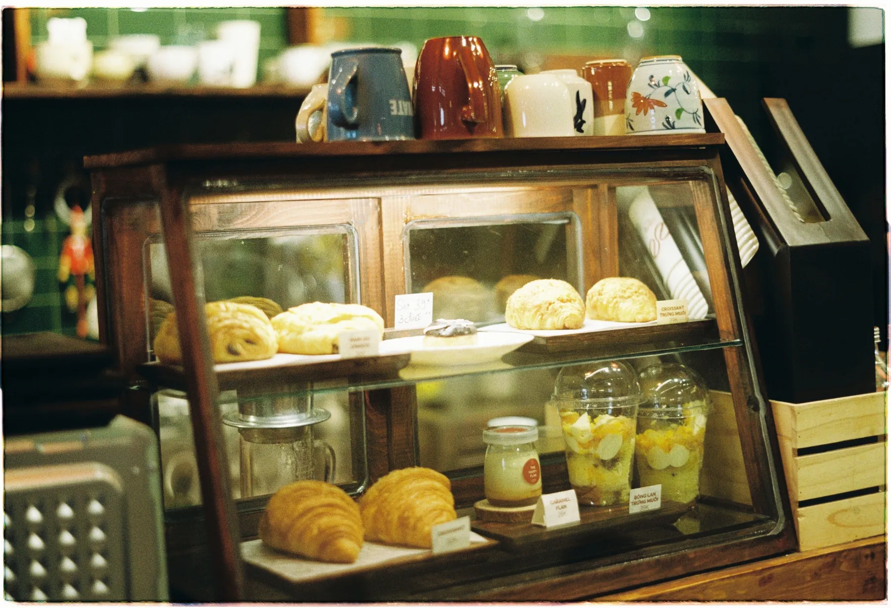
Sağlıklı beslen,
sağlıklı yaşa.
Her gün taze pastalar, kurabiyeler ve tuzlular. Kaçındığınızı seçin, menü size göre süzülsün; siparişiniz hazır mesajla WhatsApp'a düşsün.
Mira'da iyi bir tabak sade başlar: bildiğiniz malzeme, okunur bir içerik listesi, acele etmeyen bir masa.
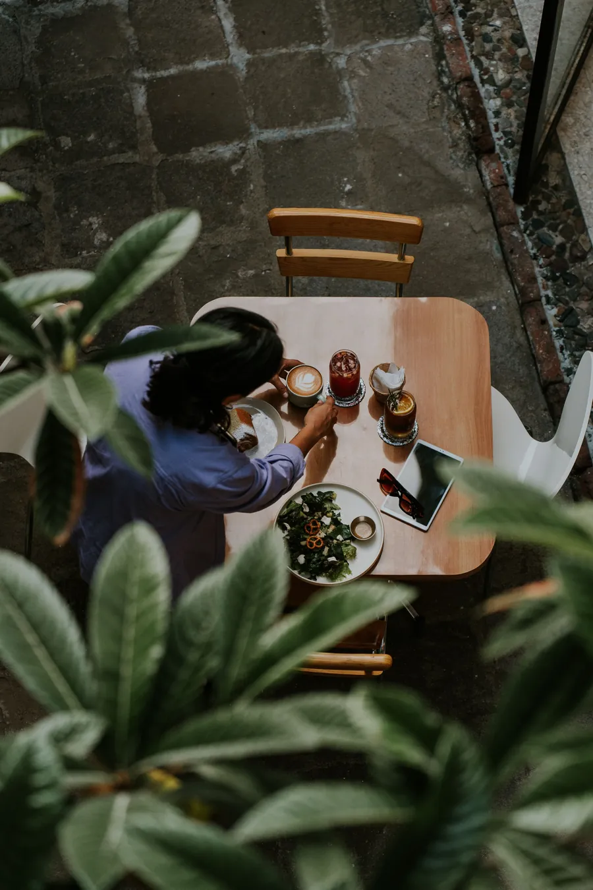
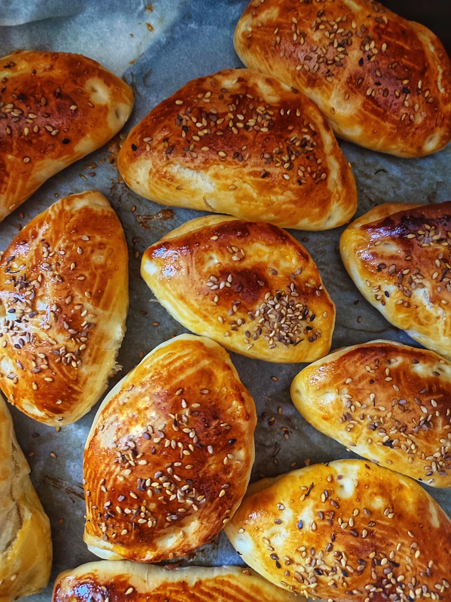
Tepsi fırından,
kapı açılırken.
Bu bölümde sabah tuzlularınızın hikâyesi durur: hangi saatte fırına girdiği, hangi unla yapıldığı. Bilgiyi sizden alırız; uydurma bir cümle yazmayız.
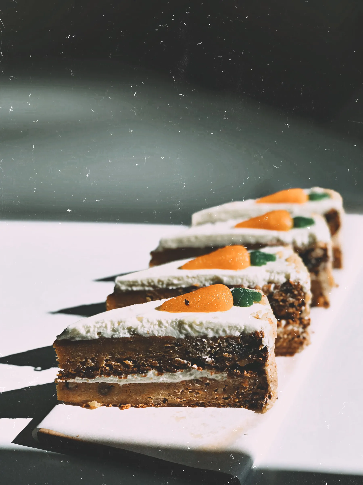
Dilim dilim,
içi belli.
Her pastanın yanında içeriği yazar; misafir sormadan bilir. Pasta vitrininizin gerçek fotoğrafını birlikte çekeriz: bir öğleden sonra, doğal ışık, bir saat.
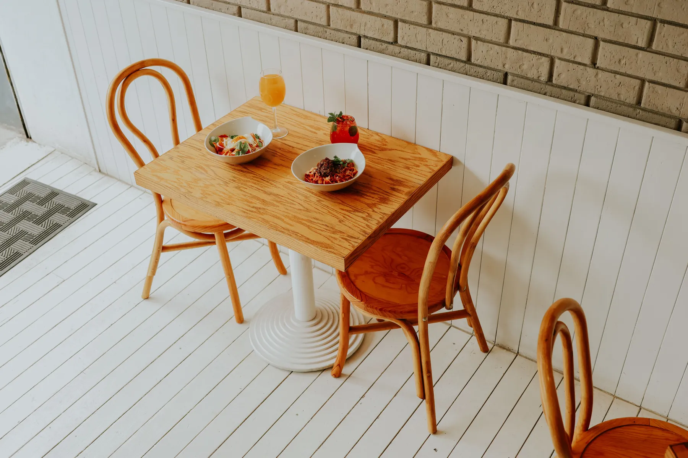
Bir masa, bir kâse,
acele yok.
Seçin, mesaj yazılsın.
Kuşpınar'da, Emek Caddesi'nde.
- Adres
- Kuşpınar Mah., Emek Cad. No:131, Denizli
- Telefon
- 0258 264 06 64
- 0531 204 96 46
- Çalışma saatleri
- Sizden alınıp eklenecek

Masadan kareler.
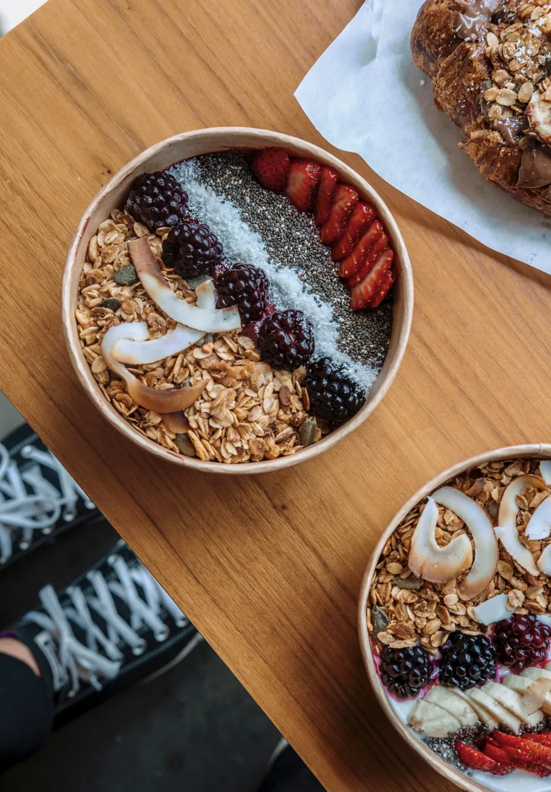
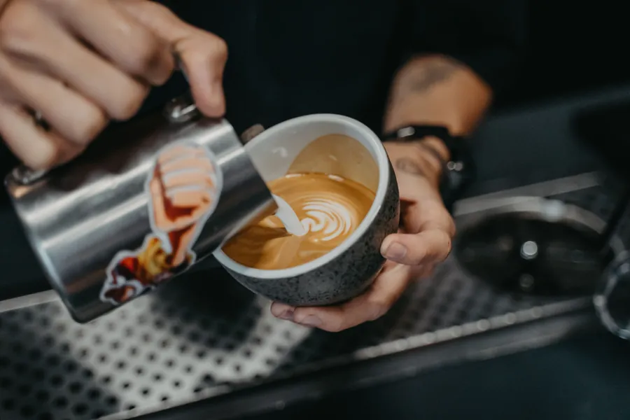
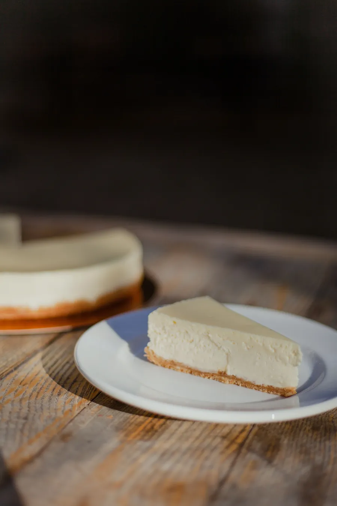
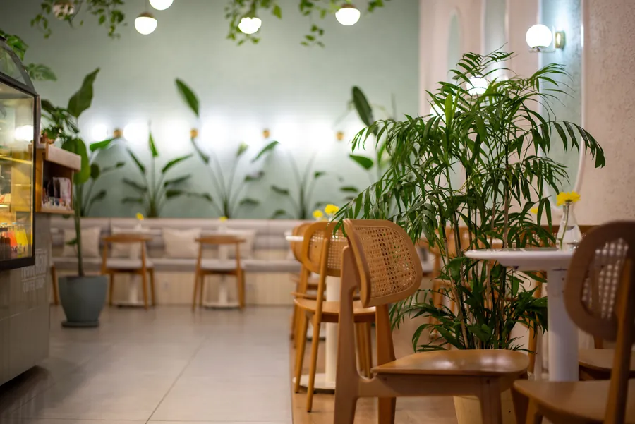
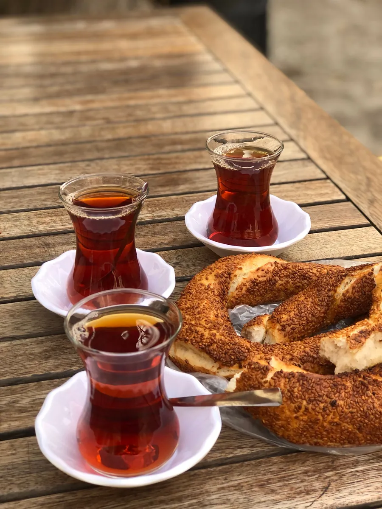
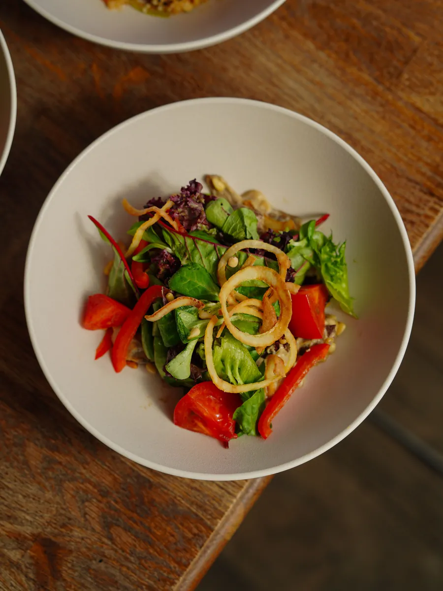
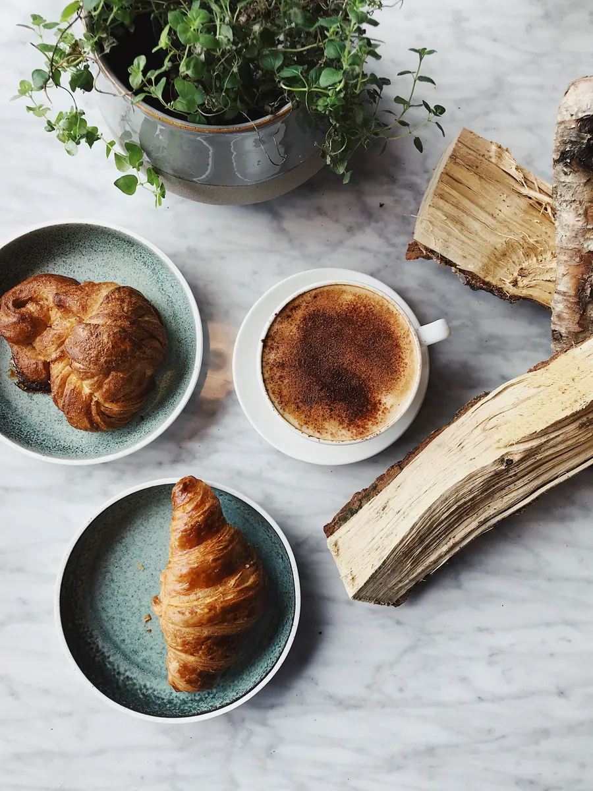
Beğendiyseniz, söyleyin.
Google'daki yorumlar bir sonraki misafirin kararını verir. Sitede uydurma puan ya da yorum göstermeyiz; doğrudan Google sayfanıza yönlendiririz.